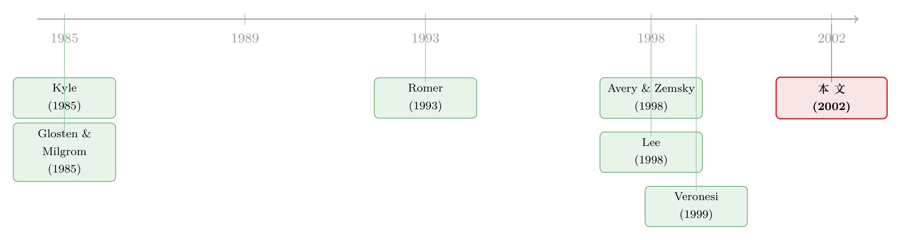

没有新闻的暴跌：被「挡在场外」的人，如何亲手扣动了崩盘的扳机
本文读的是 Cao, Coval & Hirshleifer (2002, Review of Financial Studies)：当交易需要一笔固定的「启动成本」时，一部分掌握私人信息的投资者会按兵不动、被「晾在场边」（sidelined），直到价格走势替他们验证了手里的信号才肯进场。于是交易本身——而非外部新闻——内生地制造了消息的到来。这一个机制，足以同时解释三件让理性定价头疼的事：上涨之后收益变得负偏、下跌之后变得正偏；大的价格波动常常找不到对应的外部新闻；以及大波动之后波动率会扎堆。而这一切，发生在一个事前完全对称的世界里。
1 引言：一段「该跌没跌、该买没买」的日子
先看一句话。1997 年 10 月底，亚洲金融风暴正烧到纽约，纽约银行的首席投资官 Kevin Bannon 对《华尔街日报》说了一段后来被这篇论文放在卷首的话：
情绪的逆转看着令人吃惊……所有人都在等那些「不够老练」的投资者冲进来恐慌抛售。他们没有。而当那阵恐慌的卖压没有出现时，反倒是这些「老练」的买家恐慌性地买了进去。
这段话里藏着一个让人不安的画面：市场上有一大群人，握着观点，却站在场外不动。他们什么时候动、往哪个方向动，没人知道——可所有人又都清楚他们迟早会动。于是价格的下一步，竟然取决于这群「沉默的人」会不会、以及怎样被惊动。
这并不是个例。关于股市，水房里（water-cooler）聊雅虎的人，远远多于真的去买卖雅虎的人；很多人对大盘有强烈看法，却几乎从不做择时。有意见，不等于有交易。
把这个日常观察当真，会逼出一个尴尬的问题。近二十年的实证给了我们三组顽固的规律：
- 条件偏度（conditional skewness）会随过去走势翻转。Ederington & Lee (1996) 用高频期货数据发现，国债期货若连续出现四次同向的价格变动，第五次继续同向的概率是反向的四倍；可一旦这个序列被一次反转打断，那次反转方向再延续的概率，反过来是回头的 2.5 倍。Harvey & Siddique (1999) 用月度数据，「偏度恒定」这个原假设被稳稳地在 1% 水平上拒绝。
- 大的价格波动，常常对不上任何外部新闻。Cutler, Poterba & Summers (1989) 发现，指数的大变动很少伴随清晰的新闻公告；Roll (1988) 发现个股的价格变动同样很难用公开消息解释。
- 波动率会扎堆。Schwert (1990) 看了一个世纪的美股，发现大波动之后波动率会跳升，并且常常延续好几周。
这三组规律，对理性定价是个挑战。凭什么外部新闻的到来，会随着过去的新闻而呈现偏态？又凭什么新闻该来得更快或更慢，只因为之前来过一些新闻？ 新闻是外生的，它不该「记得」自己昨天怎么来的。
这篇论文给出的回答，干净得近乎挑衅：这些条件性的规律，根本不需要外部新闻配合演出。只要交易有一笔固定成本，它们就会在一个事前对称的世界里自己长出来。 关键在于——交易事件本身，会内生地触发新闻的到来。
2 一个核心：交易，会自己制造新闻
整篇文章其实只在反复打磨一个想法，值得我们慢慢把它说透。
首先，设想一个理想世界：异质的投资者时时刻刻参与每一个市场，信息一到就瞬间再平衡。果真如此，做市商每时每刻都能看见所有人在所有证券上的订单，对「谁手里有什么信息」了如指掌，价格也就能把信息聚合得近乎完美。
接着，一个自然的问题是：现实像这样吗？显然不像。绝大多数个人和机构，对任何一只股票都只是偶尔交易，甚至从不交易。让多数人不去做哪怕一点点交易的，可以看成一笔固定成本——不一定是零股的佣金，更重要的是「去研究、去决定、去下单、去跟踪」所要花的注意力与精力。
然后，真正的张力来了。被这笔成本挡在场外的人，并不是没有信息的人。论文的前提恰恰是：这些「场边投资者」手里握着关于证券价值的相关信息，只是这些信息还没被价格吸收。于是市场里始终漂浮着一团未被聚合的私人观点。
但真正关键的一步在于：把这群人请进场的，不是新闻，而是价格走势本身。一个收到利好信号、正在犹豫要不要买的投资者，面对一次上涨，心里有一架天平——一头是「现在买更贵了」，另一头是「我的信息被别人的行动验证了」。而且，由于价格是被一个不知情的做市商修正的，这次不利的价格上移，未必吃掉他的净收益：他推断这次上涨多半来自一个和他类似的知情交易者，而做市商对此远没有他确定。于是，上涨触发了利好者进场。反过来，收到利空信号的人，看到价格不跌反涨，对自己信号的信心被动摇了，干脆留在场边。
注意，这里不需要任何人逆着自己的信号交易。信号与走势一致的人顺势而为，信号与走势相反的人选择沉默。正因为有这样一群「沉默的反对者」，交易事件就能刺激新闻向市场的到来——一次卖单，可能恰好是那扇一直关着的闸门被推开的瞬间。
于是反转出现了。 在一段上涨之后，最可能的情形是：场边只剩下少数几个持反对信号的人，于是价格大概率只是温和地继续上行。但存在一个不大不小的概率：场边其实积压着一大群手握利空信号的人。一旦他们集中进场，等待市场的就是一次剧烈的修正。做市商收到卖单时，会部分地预见到这种可能，于是把价格大幅下修。
把这条逻辑推到底，结论就自己浮出来了：
- 价格上涨之后，分布变得负偏——大跌的尾巴被拉长了；
- 价格下跌之后，分布变得正偏——传说中那种「死猫跳」（dead-cat bounce）的小反弹概率上升了。
而这一切，源头只是「固定成本 + 对自己信号真伪的不确定」这两样东西，在一个对称地接收新信息的世界里，硬生生压出了高度不均、路径依赖、且不对称的价格反应。
3 模型设定：一个对称世界的全部零件
要让上面这套直觉站得住脚，作者搭了一个尽可能精简的模型。我们一件件把零件摆出来。
参与者。一个由风险中性投资者构成的连续统（continuum）。每一期，每个投资者只做三选一：为这唯一的风险证券提交一张买单（买一股）、一张卖单（卖一股），或者不下单。由于是连续统，「一股」是无穷小量。订单由一个竞争性、风险中性的做市商完成。做市商不接收任何信号、交易无成本，他只报一个买卖通吃的价格。
收益与信号结构。风险资产的终值只有两种：
$$V \in \{0,\,1\},\qquad \Pr(V=1)=\Pr(V=0)=\tfrac{1}{2}.$$
为了把「偏度从对称中长出来」这件事讲干净，作者特意让两种结果等概率——事前没有任何不对称。再叠一层信息结构：以概率 \(\theta\)，交易前没有任何人收到信息；以概率 \(1-\theta\)，在 0 期，一部分投资者（知情交易者）收到条件独立的信号。每个信号取 0 或 1，并以信号精度 \(p\) 等于真值：
$$\Pr(\text{signal}=V) = p.$$
这套结构有个微妙而关键的后果：当一个投资者收到信号时，他能推断出信号也被发给了别人——这给了他相对做市商的信息优势；但别人收到的信号未必和他相同——这又意味着他能通过观察价格学到新东西。论文用一个生动的例子讲这件事：假设你得知 Pawheld 公司在研发一款「给狗用的掌上电脑」，你知道还有一小撮人也得到了同样的消息，但你无法确定他们把这当利好还是利空（有人觉得项目有戏，有人觉得是烧钱）。信息共享，却各自解读。
由此，世界被分成四个状态：终值为 1 且发了信号，记为状态 \(h\)；终值为 0 且发了信号，记为状态 \(l\)；终值为 1、0 但没发信号，分别记为 \(h^*\) 与 \(l^*\)。
交易者构成。设 \(M\) 为信息型交易者的占比，其中比例为 \(b\) 的人在信号发出时真的收到了信号（称为「知情交易者」）。一个信息型交易者若没收到信号，就干脆不下单。\(t\) 期还有占比 \(N_t\) 的流动性交易者，他们不收信号，且每一轮都被迫下单——正是这群人提供了让知情者藏身的噪声。
那笔决定一切的成本。知情交易者要交易，必须先付一笔固定启动成本。成本在人群中均匀分布于 0 到 1 之间，因此成本 \(C\le c\) 的人口比例为
$$F(c)=c. \tag{1}$$
这条看似不起眼的式 (1)，是整台机器的发动机：它把「要不要进场」从一个 0/1 的开关，变成了一条连续可调的参与曲线。
两种清算机制。作者解了两个版本：其一是批量订单（batched orders），把所有知情需求和流动性需求汇成净需求、按预告价成交，像一个多期、但知情者非策略性的 Kyle (1985)；其二是序贯单笔（sequential single order），做市商每期从总订单池里随机抽一张来成交，对应 Glosten & Milgrom (1985)（但这里不建模买卖价差）。两种机制下核心结论都成立，差别只是后者更贴近长期限的定价动态。
4 关键推导：会撒谎的价格，与被它筛掉的人
现在把零件转起来。整个机制的枢纽，是知情交易者的进场决策。
做市商是竞争、风险中性、且不知情的，所以他报的价格就是给定他能看到的订单流之下，终值的条件期望：
$$P_t = \mathbb{E}[\,V \mid \text{order flow up to } t\,].$$
这一步是 Kyle 与 Glosten-Milgrom 的标准做法。它的含义是：价格不会瞬间跳到真值，因为做市商分不清眼前这张单子是来自知情者还是流动性交易者，他只能按概率「打折」地反应。这就是前文说的「价格被一个不知情的人修正」——也正因如此，知情者才有利可图。
接着是知情者这一侧。一个收到利好信号（\(s_i=1\)）、正考虑买入的人，他的后验价值是把两样东西揉在一起算出来的：自己的私人信号，加上从价格/订单历史里读出来的「别人在干什么」。他愿意买，当且仅当这份后验价值减去要付的价格，盖得过他那笔启动成本：
这条不等式，是理解全文的钥匙。把它和式 (1) 的 \(F(c)=c\) 合在一起，会得到一个极漂亮的性质：在一群利好者中，真正会进场买入的比例，恰好等于这笔交易的净期望利润 \(\mathbb{E}[V\mid s_i=1,\mathcal{H}_t]-P_t\)。
为什么漂亮？因为它把信息直接翻译成了参与率。
- 价格刚开始上涨时，利好者的后验被「别人也在买」进一步抬高，净利润变大，于是更多买家涌入；
- 价格刚开始下跌时，对称地，更多卖家进场。
这就在知情买卖双方的参与率之间，制造出显著的不平衡。而流动性交易者是等概率买卖的——于是这份不平衡，反而帮做市商更好地推断自己面对的是知情者还是噪声。论文由此点出一个反直觉的副产品：单笔来看，启动成本竟然能改善市场对私人信息的聚合。因为成本像一道滤网，把参与率筛得对价格高度敏感，让价格走势能够「准确地测试」市场的信息集。作者随后正是通过比较正成本与零成本两种基准，来分离出「正是市场摩擦推高了条件偏度」这一结论。
现在，把这台机器多转几期，前文那两条预言就成了机械的必然。设想价格连涨了几期，成功聚合了看多的观点。此刻市场里积着一团没被聚合的看空观点——一个「信息悬垂」（information overhang）。所有人都明白它的存在，但谁也不知道它有多大：可能后来发现「藏着的熊」很多（于是大失所望），也可能只有寥寥几个（于是如释重负）。一旦修正真的发生，市场会陷入对悬垂规模的高度不确定——这次修正到底会放出多少头熊？
这份「不知道悬垂有多大」的不确定，正是波动率扎堆的来源：大的修正会带来一段滞留数期的波动率上升。注意，这里没有任何关于 GARCH 的外生假设，波动的「记忆」是从信息悬垂的释放里内生长出来的。（关于把「波动会扎堆」这件事还原成投资者结构、而非外生设定，可参见《GARCH 从哪儿来？——把「波动会扎堆」这件事，还给投资者的情绪》。）
5 三个预言，与那群「沉默的卖家」
把第 4 节的机器输出整理一下，就是摘要里那三条、也是全文真正要交付的东西：
其一，偏度的路径依赖。 上涨之后负偏、下跌之后正偏——而模型事前对称。直觉前面已经讲透：上涨多半温和延续，但小概率撞上一个庞大的看空悬垂，一旦释放就是崩盘；做市商预见到这条肥尾，于是对卖单反应剧烈。这恰好对得上 Chen, Hong & Stein (1999) 的事后检验——他们发现，在控制了其他决定因素后，高的月度收益对应着更低（更负）的偏度。论文里的崩盘，不靠「投资者逆着信号交易」这种前奏（那是 Avery-Zemsky 的路子），而纯粹由知情者的沉默驱动。（关于「市场为什么只会崩、不会暴涨」的另一条——异质信念加卖空约束——的讲法，可参见《市场为什么只会「崩」，不会「暴涨」？——一个关于沉默者的故事》。）
其二，大波动与外部新闻的脱节。 因为触发价格剧变的是交易事件而非新闻到来，所以大的价格变动可以完全找不到对应的公告。这正是 Cutler-Poterba-Summers 与 Roll 的实证之困，模型替它们提供了一个机制。
其三，波动率聚集。 大变动之后，因「悬垂规模未知」而起的波动率上升会滞留数期——这对上了 Schwert 笔下「大波动后波动率持续数周」的世纪图景。
值得强调的是：这是一篇理论论文。它交付的不是某个回归系数，而是一台能同时吐出这三条经验规律的机器。文中给出的量级（Ederington-Lee 的 4 倍与 2.5 倍、Harvey-Siddique 1% 的拒绝）是用来对标机制方向的经验事实，而非模型估计值——读的时候要把这条界线划清楚。
顺带一提，这条「交易本身在透露谁在场」的思路，和把成交量当作识别交易者类型的实证文献是同源的（参见 Llorente 等人的工作，以及《放量之后，是反转还是续涨？——成交量替你认出了『谁在交易』》）。
6 文献脉络
把这篇论文放回它生长的那条藤上，会看得更清楚。
最上游是市场微观结构的两块基石：Kyle (1985) 的批量竞拍、知情者藏在流动性噪声里；Glosten & Milgrom (1985) 的序贯成交与买卖价差。本文的两种清算机制，分别是这两者的多期、非策略性变体。再加上 Easley & O'Hara (1987) 提出的「事件不确定性」（event uncertainty）——市场不仅不确定信号内容，还不确定信号到底有没有被发出——这第二维不确定，是后续一系列「无新闻的价格运动」模型的命门。

中游是三篇本文自陈要直接扩展的论文。Romer (1993) 证明：即便投资者理性，只要有交易成本，价格也可以在新闻寥寥的时期里大幅波动、且对基本面反映很差。本文与他的关键区别在于成本的时点——Romer 的交易者在收到信息之前就得付固定成本，而本文的交易者在每次选择交易时才付。于是本文的投资者不仅向早先的交易者学习自己信号对不对，还要拿这份「更有把握的信息」去和交易成本掂量；最终只有信心被显著改善的人才进场，这就压出了偏度的路径依赖。Avery & Zemsky (1998) 指出，在第二维不确定（信号有没有发）存在时，上涨能诱使连持利空信号的人也买入，从而埋下崩盘的种子；本文则证明，崩盘不需要这种「逆信号交易」的前奏，沉默就够了。Lee (1998) 让交易成本限制信息聚合、由罕见的极端信号触发崩盘；本文与他的分野是：本文的信号分布对称，触发剧烈波动的是寻常的信号值，而且本文显式地刻画了偏度与波动率如何随过去走势移动。
与本文并行的，是一批为这些「条件矩」提供理性解释的工作：Veronesi (1999) 证明，即便无摩擦，状态的离散性也能产出条件偏度与波动——所以本文必须靠「正成本 vs 零成本」的对照，才能干净地把功劳归给市场摩擦。再往外，是 Wang (1993)、Brown & Jennings (1989)、Llorente 等 (1999) 这条「信息不对称如何写出收益序列相关」的脉络，以及 Shiller (1995) 那个朴素却深刻的提醒：人与人之间的对话，在传递信息上是低效的——这恰是「信息会被晾在场边」的微观基础。至于一阶矩的路径依赖（动量与长期反转，DeBondt & Thaler 1985；Jegadeesh & Titman 1993），本文明确表示自己不碰，它要的是二阶与三阶矩。
7 评论与延伸（Q&A + 研究方向）
(a) 几个可能的疑问
Q：「场边投资者」和「卖空约束」导致的崩盘（如 Hong-Stein）到底有什么不同？
两者都让悲观信息被「藏」起来、再在下跌时集中释放，所以都预测下跌时正偏、易崩盘。但藏的机制不同：Hong-Stein 是外生的卖空约束把空头钉在场外；本文是内生的固定成本 + 信号真伪的不确定，让投资者自愿沉默——而且看多者在上涨时也会经历对称的「悬垂」。本文的崩盘不依赖任何制度性禁令，只依赖一笔注意力成本。
Q：模型事前完全对称，偏度究竟是从哪儿冒出来的？
来自参与率对价格的非线性、非对称响应。式 (1) 让参与比例等于净期望利润，而净利润随价格走势凸性地变化：上涨时利好者的进场是「温和且大概率」的，但场边积压的利空悬垂一旦释放就是「剧烈且小概率」的。对称的信号，经过这道不对称的滤网，输出了不对称的价格分布。对称性是被「成本筛网」打破的，不是被假设打破的。
Q：作者说启动成本反而「改善」了信息聚合，这不反直觉吗？
是反直觉，但有道理。成本让参与率对价格高度敏感，于是知情买卖的不平衡变大，做市商更容易把知情订单从噪声里认出来，价格走势就成了一次对市场信息集的「准确测试」。代价是聚合变得断续而集中——平时管道淤塞，偶尔成块释放。聚合质量与聚合平稳性，是一对此消彼长。
Q：这是高频（日内）现象还是低频现象？
作者刻意不下定论。模型里有做市商，诱人往日内解读；但他们强调信息可以被「晾」上几天、几周甚至更久，并没有按某个时间尺度去校准模型。两种清算机制中，序贯单笔更像日内，批量订单更像长期限定价。这也意味着实证检验时，「一期」对应多长，是个需要研究者自己交代的选择。
Q：那三条经验规律，会不会有更省事的解释？
会，作者自己也列了。比如有限责任的股权本就像一份看涨期权，公司价值分布的不对称会传导成股价的不对称（Black 1972；Christie 1982；Nelson 1991）；杠杆随股价变化也会带来波动率移动。Veronesi (1999) 更说明无摩擦模型靠状态离散就能产出条件偏度。本文的辩护是：通过正成本与零成本的对照，证明摩擦确实在边际上抬高了条件偏度——这是它区别于上述竞争解释的地方。
Q：模型预测的崩盘不对称，能不能在债券、信用市场里找到对应？
直觉上能。公司债远比股票交易稀疏，持有人「偶尔才动一次」的特征更极端，注意力成本更高，悬垂理应更厚。但要把它做成检验并不容易：债券缺乏连续报价、做市商库存动机混入其中，「价格走势触发进场」这条因果很难和「流动性冲击触发抛售」分开。这恰好通向下面的研究方向。
(b) 几个可能的研究问题与提案
1. 把「场边投资者」搬进公司债市场。 【经济故事】债券持有人（尤其是买入持有的保险公司、养老金）极少交易，信息悬垂理应比股票更厚、释放更猛。本文机制预测：信用利差在走阔之后应呈现更强的正偏与更明显的波动率聚集，且大的利差跳动常对不上评级或财报事件。 【可行性】中。数据可用 TRACE 逐笔成交 + Mergent FISD 发行信息 + 评级/新闻事件库。识别的难点是把「交易触发的新闻」和「外生流动性冲击」分开——可考虑用同一发行人不同券、或用做市商身份固定效应来吸收库存动机。是 doable 的，但干净的识别需要巧设计。
2. 用持有人「注意力」的外生变动，检验参与率—价格弹性。 【经济故事】模型的核心是「参与率等于净期望利润」。如果能找到一个外生改变某类持有人交易成本/注意力的冲击（如某券进入某指数、或被纳入央行合格抵押品清单），就能看参与率对价格走势的敏感度是否随之变化。 【可行性】中。指数纳入、抵押品资格变更都是较干净的准自然实验（这类设计在本博客多篇文章里出现过）。挑战是「参与率对价格的弹性」需要逐投资者的持仓/成交面板，欧洲的监管交易数据（如 MiFID II）或 13F 拼接是可能的来源。
3. 外资作为「天然的场边投资者」。 【经济故事】外资对本地股票的交易更稀疏、注意力成本更高，本文逻辑预测：外资持有比例高的股票，在大涨后应有更强的负偏、在大跌后更强的正偏，且其崩盘更难归因于本地新闻。这把「场边」从抽象人群落到了一个可观测的持有人类型上。 【可行性】中到高。可用韩国、台湾等有逐笔投资者类型标签的交易所数据，或用各国「可投资度」（investability）作为外资可达性的代理。识别相对干净，难点是要排除「外资本就偏好某类波动结构的股票」的选择效应——可用可投资度的制度性变更作为冲击。
4. 把「信息悬垂规模」做成一个可测的状态变量。 【经济故事】模型说波动率上升源于「不知道悬垂多大」。若能用期权隐含偏度、或成交量—收益不平衡构造一个「悬垂规模不确定」的代理，就能直接检验它是否预测了修正后的波动率延续。 【可行性】中。期权数据（OptionMetrics）可得，构造代理在技术上可行；真正难的是论证这个代理测的就是「悬垂」而非一般的不确定性。属于「想法漂亮、但测量负担重」的一类。
我的判断
这篇论文的贡献，在于用一个极简的摩擦——固定启动成本——把三条原本各说各话的经验规律（条件偏度、价格与新闻的脱节、波动率聚集）串成了一条因果链，而且全程不破坏事前对称性。它最聪明的地方，是把「不对称」的来源从「假设」挪到了「式 (1) 那道筛网」上：对称的信号穿过一道对价格非线性响应的参与曲线，输出了不对称的分布。相比 Romer、Avery-Zemsky、Lee，它的边际很清楚——崩盘不需要逆信号交易、信号分布对称、且显式刻画了高阶矩的路径依赖。
但要诚实地说几句担心。其一，这是一个定性模型，它解释了规律的方向，却没有承诺任何量级，因此它和那些竞争性解释（期权式杠杆、状态离散）之间，最终要靠数据去分胜负，而文中并没有把这场对决打完。其二，「正成本改善聚合」这个反直觉结论，相当依赖「成本均匀分布于 [0,1]」「未收信号者一律不交易」这类为可解性而设的假设——把这些假设松开后，结论的稳健性是个真问题。其三，模型在「一期」对应多长这件事上刻意留白，这让它优雅，却也让它难以被一个具体的频率检验所证伪。
我最想看到的后续，是有人把这套「场边—悬垂—释放」的语言，落到一个持有人类型可观测、且交易成本有外生变动的市场里——公司债与外资持有，都是天然的试验场。当「沉默的卖家」不再是模型里的影子，而是数据里一个可以被指认、被计数的人群时，这篇 2002 年的理论才算真正交出了它的实证答卷。
参考文献
- Avery, C., and P. Zemsky (1998). Multi-Dimensional Uncertainty and Herd Behavior in Financial Markets. American Economic Review 88, 724–748.
- Black, F. (1972). Capital Market Equilibrium with Restricted Borrowing. Journal of Business 44, 444–455.
- Brown, D. P., and R. H. Jennings (1989). On Technical Analysis. Review of Financial Studies 2, 527–551.
- Cao, H. H., J. D. Coval, and D. Hirshleifer (2002). Sidelined Investors, Trading-Generated News, and Security Returns. Review of Financial Studies 15(2), 615–648.
- Chen, J., H. Hong, and J. C. Stein (1999). Forecasting Crashes: Trading Volume, Past Returns, and Conditional Skewness in Stock Prices. Working paper, Stanford University.
- Cutler, D. M., J. M. Poterba, and L. H. Summers (1989). What Moves Stock Prices? Journal of Portfolio Management 15, 4–12.
- DeBondt, W. F. M., and R. H. Thaler (1985). Does the Stock Market Overreact? Journal of Finance 40, 793–808.
- Easley, D., and M. O'Hara (1987). Price, Trade Size, and Information in Securities Markets. Journal of Financial Economics 19, 69–90.
- Ederington, L., and J. H. Lee (1996). Persistent Futures Price Patterns: Market Making, Limit Orders, and Time. Working paper, University of Oklahoma.
- Glosten, L. R., and P. R. Milgrom (1985). Bid, Ask, and Transaction Prices in a Specialist Market with Heterogeneously Informed Traders. Journal of Financial Economics 14, 71–100.
- Harvey, C. R., and A. Siddique (1999). Conditional Skewness in Asset Pricing Tests. Journal of Finance (forthcoming).
- Jegadeesh, N., and S. Titman (1993). Returns to Buying Winners and Selling Losers: Implications for Stock Market Efficiency. Journal of Finance 48, 65–91.
- Kyle, A. (1985). Continuous Auctions and Insider Trading. Econometrica 53, 1315–1335.
- Lee, I. H. (1998). Market Crashes and Informational Avalanches. Review of Economic Studies 65, 741–759.
- Llorente, G., R. Michaely, G. Saar, and J. Wang (1999). Dynamic Volume-Return Relation of Individual Stocks. Working paper, Cornell University.
- Lo, A. W., and J. Wang (2000). Trading Volume: Definitions, Data Analysis, and Implications of Portfolio Theory. NBER Working Paper No. 7625.
- Roll, R. (1988). R². Journal of Finance 43, 541–566.
- Romer, D. (1993). Rational Asset-Price Movements Without News. American Economic Review 83, 1112–1130.
- Schwert, G. W. (1990). Stock Volatility and the Crash of '87. Review of Financial Studies 3, 77–102.
- Shiller, R. J. (1995). Conversation, Information, and Herd Behavior. American Economic Review 85, 181–185.
- Veronesi, P. (1999). Stock Market Overreaction to Bad News in Good Times: A Rational Expectations Equilibrium Model. Review of Financial Studies 12, 975–1007.
- Wang, J. (1993). A Model of Intertemporal Asset Prices Under Asymmetric Information. Review of Economic Studies 60, 249–282.